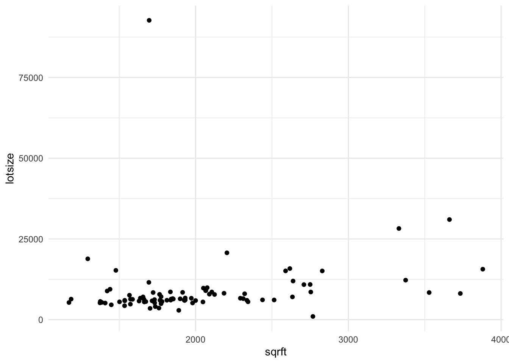

library(tidyverse)
library(broom)
library(testthat)
library(patchwork)8 OLS Regression Estimates

theme_set(theme_minimal())8.1 Learning Objectives
At the end of this week, students will be able to:
- Understand the algorithm that produces the OLS regression estimates.
- Fit regressions to produce estimates from a best linear predictor.
- Produce predictions from this OLS regression that are informative about the population.
8.2 Class Announcements
- Lab 1 is due next week!
- There is not a “homework” assignment this week – instead you’re working on your group’s lab
- You’re doing great - keep it up!
8.3 Roadmap
Rear-View Mirror
- Statisticians create a population model to represent the world.
- Sometimes, the model includes an “outcome” random variable \(Y\) and “input” random variables \(X_1, X_2,...,X_k\).
- The joint distribution of \(Y\) and \(X_1, X_2,...,X_k\) is complicated.
- The best linear predictor (BLP) is the canonical way to summarize the relationship.
Today
- OLS regression is an estimator for the BLP
- We’ll discuss the mechanics of OLS
Looking Ahead
- To make regression estimates useful, we need measures of uncertainty (standard errors, tests…).
- The process of building a regression model looks different, depending on whether the goal is prediction, description, or explanation.
8.4 Discussion Questions
Suppose we have random variables \(X\) and \(Y\).
- Why do we care about the BLP?
- What assumptions are needed for OLS to consistently estimate the BLP?
8.5 Best Linear Predictor and OLS Regression as a Predictor
We’ve worked with this function in previous weeks:
Suppose that random variables \(X\) and \(Y\) are jointly continuous, with joint density function given by,
\[ f_{X,Y}(x,y) = \begin{cases} 2-x-y, & 0 \leq x \leq 1; 0 \leq y \leq 1 \\ 0, & otherwise \end{cases} \]
With this function we have previously been able to calculate some quantities that we care about, specifically:
- The covariance between \(X\) and \(Y\), which we calculated to be: \(-1/144\).
- The variance of \(X\), which we calculated to be \(11/144\).
\[ \begin{aligned} Cov[X,Y] &= E[XY] - E[X]E[Y] \\ &= \int_{0}^{1} \int_{0}^{1} xy(2-x-y)\ dx \ dy - \left(\int_{0}^{1} x(1.5-x)\ dx\right)\left(\int_{0}^{1}y(1.5-y)\ dy\right) \\ &= \frac{1}{6} - \left(\frac{5}{12}\times\frac{5}{12}\right) \\ &= - \frac{1}{144} \end{aligned} \]
\[ \begin{aligned} Var[X] &= E[XX] - E[X]E[X] \\ &= \int_{0}^{1} x^2(1.5 - x)\ dx - \left(\int_{0}^{1} x(1.5-x) \right) \\ &= \frac{1}{4} - \left(\frac{5}{12} \right)^2 \\ &= \frac{11}{144} \end{aligned} \]
With the two of these, we were able to also write down the best linear predictor,
- The \(\beta_{BLP} = Cov[X,Y]/Var[X] = (-1/144) * (144/11) = -1/11\).
- \(\alpha_{BLP} = E[Y] - \beta_{BLP}E[X] = (5/12) - (-1/11)(5/12) = 71/132\). (Sorry for the ugly math…)
We can write code that would sample from this PDF:
joint_pdf_1 <- function(x_input, y_input) {
probs = 2 - x_input - y_input
return(probs)
}
joint_pdf_1(x_input = 0, y_input = 0)[1] 2This next step is the part that requires us to squint a little bit. We’re going to create a “population” that has 10,000 observations in it, and we’re going to sample from this population in a way that is governed by the joint pdf.
d <- data.frame(
expand.grid(
x = seq(from = 0, to = 1, length.out = 100),
y = seq(from = 0, to = 1, length.out = 100))) |>
mutate(prob = joint_pdf_1(x_input = x, y_input = y))
tail(d) x y prob
9995 0.9494949 1 0.05050505
9996 0.9595960 1 0.04040404
9997 0.9696970 1 0.03030303
9998 0.9797980 1 0.02020202
9999 0.9898990 1 0.01010101
10000 1.0000000 1 0.00000000With that put together, we can take samples from this data:
sample_10 <- d |> slice_sample(n = 10, weight_by = prob)
sample_20 <- d |> slice_sample(n = 20, weight_by = prob)
sample_100 <- d |> slice_sample(n = 100, weight_by = prob)
sample_200 <- d |> slice_sample(n = 200, weight_by = prob)
sample_10000 <- d |> slice_sample(n = 10000, weight_by = prob, replace=TRUE)plot_10 <-
sample_10 |>
ggplot() +
aes(x=x, y=y) +
geom_point() +
geom_smooth(method = "lm", se = FALSE)
plot_20 <-
sample_20 |>
ggplot() +
aes(x=x, y=y) +
geom_point() +
geom_smooth(method = "lm", se = FALSE)
plot_100 <-
sample_100 |>
ggplot() +
aes(x=x, y=y) +
geom_point() +
geom_smooth(method = "lm", se = FALSE)
plot_200 <-
sample_200 |>
ggplot() +
aes(x=x, y=y) +
geom_point() +
geom_smooth(method = "lm", se = FALSE)
(plot_10 | plot_20) /
(plot_100 | plot_200)`geom_smooth()` using formula = 'y ~ x'
`geom_smooth()` using formula = 'y ~ x'
`geom_smooth()` using formula = 'y ~ x'
`geom_smooth()` using formula = 'y ~ x'
model_10 <- lm(y ~ x, data = sample_10)
model_100 <- lm(y ~ x, data = sample_100)
model_200 <- lm(y ~ x, data = sample_200)
model_10000 <- lm(y ~ x, data = sample_10000)
coef(model_10)(Intercept) x
0.326597877 0.001721911 results_10 <- NA
for(i in 1:100) {
sample_10 <- d |> slice_sample(n = 10, weight_by = prob)
model_10 <- lm(y ~ x, data = sample_10)
results_10[i] <- coef(model_10)['x']
}
results_200 <- NA
for(i in 1:100) {
sample_200 <- d |> slice_sample(n = 200, weight_by = prob)
model_200 <- lm(y ~ x, data = sample_200)
results_200[i] <- coef(model_200)['x']
}plot_10 <- ggplot() +
aes(x=results_10) +
geom_histogram()
plot_200 <- ggplot() +
aes(x=results_200) +
geom_histogram()
plot_10 /
plot_200`stat_bin()` using `bins = 30`. Pick better value with `binwidth`.
`stat_bin()` using `bins = 30`. Pick better value with `binwidth`.
8.6 The Regression Anatomy Formula
We make the claim in live session that we can re-represent a coefficient that we’re interested in as a function of all the other variable in a regression. That is, suppose that we were interested, initially, in estimating the model:
\[ Y = \hat\beta_{0} + \hat\beta_{1} X_{1} + \hat\beta_{2} X_{2} + \hat\beta_{3}X_{3} + e \] that we can produce an estimate for \(\hat\beta_{1}\) by fitting this auxiliary regression,
\[ X_{1} = \hat\delta_{0} + \hat\delta_2X_2 + \hat\delta_3X_3 + r_{1} \]
And then using the residuals, noted as \(r_1\) above, in a second auxiliary regression,
\[ Y = \gamma_0 + \gamma_1 r_1 \]
The claim that we make in the live session is that there is a guarantee that \(\beta_1 = \gamma_1\). Here, we are first going to show that this is true, and then we’re going to reason about what this means, and why this feature is interesting (or at least useful) when we are estimating a regression.
Suppose that the population model is the following:
\[ X_{1} = \begin{cases} \frac{1}{10}, & 0 \leq x \leq 10, \\ 0, & otherwise \end{cases} \]
\[ X_{2} = \begin{cases} \frac{1}{10}, & 0 \leq x \leq 10, \\ 0, & otherwise \end{cases} \]
\[ X_{3} = \begin{cases} \frac{1}{10}, & 0 \leq x \leq 10, \\ 0, & otherwise \end{cases} \] And, furthermore suppose that \(Y = g(X_{1}, X_{2}, X_{3}\), specifically, that:
\[ Y = -3 + (1\cdot X_1) + (2\cdot X_2) + (3\cdot X_3) \] Then, because we know the population model, we can produce a single sample from it using the following code:
d <- data.frame(
x1 = runif(n = 100, min = 0, max = 10),
x2 = runif(n = 100, min = 0, max = 10),
x3 = runif(n = 100, min = 0, max = 10)) %>%
mutate(y = -3 + 1*x1 + 2*x2 + 3*x3 + rnorm(n = n(), mean = 0, sd = 1))
head(d) x1 x2 x3 y
1 9.3320085 9.855955 9.1278690 53.625541
2 6.5093525 2.675027 7.1781530 30.686274
3 4.1422067 3.367351 0.4144641 9.339048
4 7.6413306 7.155387 7.3791702 41.994304
5 0.8929203 4.575540 5.7442180 24.157577
6 9.8829652 4.783543 9.2691818 43.507461Notice that when we made this data, we included a set of random noise at the end. The idea here is that there are other “things” in this universe that also affect \(Y\), but that we don’t have access to them. By assumption, what we have measured in this world, \(X_1, X_2, X_3\) are uncorrelated with these other features.
8.6.1 Estimate an OLS Regression
Let’s begin by producing an estimate of the OLS regression of Y on these X variables. Notice the way that we’re talking about this:
We are going to regress Y on \(X_{1}\), \(X_{2}\), and \(X_{3}\).
model_main <- lm(y ~ x1 + x2 + x3, data = d)
coef(model_main)(Intercept) x1 x2 x3
-2.063715 0.895079 1.985956 2.966923 8.6.2 Regression Anatomy and Fritch Waugh Lovell
The claim is that we can produce an estimate of \(\hat{\beta}_1\) using an auxiliary set of regression estimates, and then using the regression from that auxiliary regression.
model_aux <- lm(x1 ~ x2 + x3, data = d)If we look into the structure of model_aux we can see that there are a ton of pieces in here.
str(model_aux)List of 12
$ coefficients : Named num [1:3] 5.12613 0.05769 0.00291
..- attr(*, "names")= chr [1:3] "(Intercept)" "x2" "x3"
$ residuals : Named num [1:100] 3.61 1.21 -1.18 2.08 -4.51 ...
..- attr(*, "names")= chr [1:100] "1" "2" "3" "4" ...
$ effects : Named num [1:100] -54.5661 1.6628 0.0853 1.7037 -4.8934 ...
..- attr(*, "names")= chr [1:100] "(Intercept)" "x2" "x3" "" ...
$ rank : int 3
$ fitted.values: Named num [1:100] 5.72 5.3 5.32 5.56 5.41 ...
..- attr(*, "names")= chr [1:100] "1" "2" "3" "4" ...
$ assign : int [1:3] 0 1 2
$ qr :List of 5
..$ qr : num [1:100, 1:3] -10 0.1 0.1 0.1 0.1 0.1 0.1 0.1 0.1 0.1 ...
.. ..- attr(*, "dimnames")=List of 2
.. .. ..$ : chr [1:100] "1" "2" "3" "4" ...
.. .. ..$ : chr [1:3] "(Intercept)" "x2" "x3"
.. ..- attr(*, "assign")= int [1:3] 0 1 2
..$ qraux: num [1:3] 1.1 1.11 1.17
..$ pivot: int [1:3] 1 2 3
..$ tol : num 1e-07
..$ rank : int 3
..- attr(*, "class")= chr "qr"
$ df.residual : int 97
$ xlevels : Named list()
$ call : language lm(formula = x1 ~ x2 + x3, data = d)
$ terms :Classes 'terms', 'formula' language x1 ~ x2 + x3
.. ..- attr(*, "variables")= language list(x1, x2, x3)
.. ..- attr(*, "factors")= int [1:3, 1:2] 0 1 0 0 0 1
.. .. ..- attr(*, "dimnames")=List of 2
.. .. .. ..$ : chr [1:3] "x1" "x2" "x3"
.. .. .. ..$ : chr [1:2] "x2" "x3"
.. ..- attr(*, "term.labels")= chr [1:2] "x2" "x3"
.. ..- attr(*, "order")= int [1:2] 1 1
.. ..- attr(*, "intercept")= int 1
.. ..- attr(*, "response")= int 1
.. ..- attr(*, ".Environment")=<environment: R_GlobalEnv>
.. ..- attr(*, "predvars")= language list(x1, x2, x3)
.. ..- attr(*, "dataClasses")= Named chr [1:3] "numeric" "numeric" "numeric"
.. .. ..- attr(*, "names")= chr [1:3] "x1" "x2" "x3"
$ model :'data.frame': 100 obs. of 3 variables:
..$ x1: num [1:100] 9.332 6.509 4.142 7.641 0.893 ...
..$ x2: num [1:100] 9.86 2.68 3.37 7.16 4.58 ...
..$ x3: num [1:100] 9.128 7.178 0.414 7.379 5.744 ...
..- attr(*, "terms")=Classes 'terms', 'formula' language x1 ~ x2 + x3
.. .. ..- attr(*, "variables")= language list(x1, x2, x3)
.. .. ..- attr(*, "factors")= int [1:3, 1:2] 0 1 0 0 0 1
.. .. .. ..- attr(*, "dimnames")=List of 2
.. .. .. .. ..$ : chr [1:3] "x1" "x2" "x3"
.. .. .. .. ..$ : chr [1:2] "x2" "x3"
.. .. ..- attr(*, "term.labels")= chr [1:2] "x2" "x3"
.. .. ..- attr(*, "order")= int [1:2] 1 1
.. .. ..- attr(*, "intercept")= int 1
.. .. ..- attr(*, "response")= int 1
.. .. ..- attr(*, ".Environment")=<environment: R_GlobalEnv>
.. .. ..- attr(*, "predvars")= language list(x1, x2, x3)
.. .. ..- attr(*, "dataClasses")= Named chr [1:3] "numeric" "numeric" "numeric"
.. .. .. ..- attr(*, "names")= chr [1:3] "x1" "x2" "x3"
- attr(*, "class")= chr "lm"To evaluate our claim, we need to find the residuals from this regression. As a knowledge check, what is it that we mean when we say, “residual” in this sense?
To make talking about these easier, here is a plot that might be useful.
d %>%
ggplot() +
aes(x = x1, y = y) +
geom_point() +
geom_segment(aes(x = 0, xend = 10, y = 0, yend = 50), color = 'steelblue')
In order to access these residuals, we can “augment” the dataframe that we used in the model, using the broom::augment function call.
model_aux_augmented <- augment(model_aux)Because the \(Y\) variable wasn’t included in the regression for model_aux we have to bring of over from the main dataset, which is a little bit… um, hacky. Forgive these sins.
model_aux_augmented$y <- d$y
model_aux_augmented# A tibble: 100 × 10
x1 x2 x3 .fitted .resid .hat .sigma .cooksd .std.resid y
<dbl> <dbl> <dbl> <dbl> <dbl> <dbl> <dbl> <dbl> <dbl> <dbl>
1 9.33 9.86 9.13 5.72 3.61 0.0477 2.89 0.0271 1.27 53.6
2 6.51 2.68 7.18 5.30 1.21 0.0262 2.92 0.00159 0.422 30.7
3 4.14 3.37 0.414 5.32 -1.18 0.0383 2.92 0.00228 -0.414 9.34
4 7.64 7.16 7.38 5.56 2.08 0.0184 2.91 0.00328 0.723 42.0
5 0.893 4.58 5.74 5.41 -4.51 0.0116 2.88 0.00958 -1.56 24.2
6 9.88 4.78 9.27 5.43 4.45 0.0315 2.88 0.0263 1.56 43.5
7 0.642 7.78 0.606 5.58 -4.94 0.0430 2.87 0.0452 -1.74 16.7
8 5.20 8.02 9.15 5.62 -0.418 0.0342 2.92 0.000253 -0.146 44.7
9 5.54 3.99 0.645 5.36 0.178 0.0340 2.92 0.0000454 0.0622 13.1
10 0.804 3.84 5.97 5.37 -4.56 0.0145 2.88 0.0123 -1.58 25.0
# ℹ 90 more rowsFinally, with this augmented data that has information from the model, we can estimate the model that includes only the residuals as predictors of \(Y\).
model_two <- lm(y ~ .resid, data = model_aux_augmented)
coef(model_two)(Intercept) .resid
28.844230 0.895079 Our claim was that the coefficients from model_main and model_two should be the same.
test_that(
'the model coefficients are equal',
expect_equal(
as.numeric(coef(model_main)['x1']),
as.numeric(coef(model_two)['.resid']))
)Test passed 🥇But, why is this an interesting, or at least useful, feature to appreciate?
This is actually a really famous, relatively recently “rediscovered” proof. If we have a number of variables, one called an outcome and the rest called features, then we can estimate the relationship between the outcome and one feature in the following way:
- Estimate the relationship between all the other features and the one that we’re examining; save the information about the feature we’re examining which cannot be explained by the other features in some vector.
- Regress the outcome on this leftover information.
Slightly more of what is happening? In the first model, the leftover information is orthogonal to the information posessed in the regression features. In the second model, we can use this orthagonal information to estimate the effect of one variable.
8.7 Coding Activity:R Cheat Sheet
Suppose x and y are variables in dataframe d.
To fit an ols regression of Y on X:
mod <- lm(y ~ x, data = d)To access coefficients from the model object:
mod$coefficients
or coef(mod)To access fitted values from the model object:
mod$fitted
or fitted(mod)
or predict(mod)To access residuals from the model object:
mod$residuals
or resid(mod)To create a scatterplot that includes the regression line:
plot(d['x'], d['y'])
abline(mod)
or
d %>%
ggplot() +
aes(x = x, y = y) +
geom_point() +
geom_smooth(method = lm)8.8 R Exercise
Real Estate in Boston
The file hprice1.Rdata contains 88 observations of homes in the Boston area, taken from the real estate pages of the Boston Globe during 1990. This data was provided by Wooldridge.
load('data/hprice1.RData') # provides 3 objects head(data) price assess bdrms lotsize sqrft colonial lprice lassess llotsize
1 300.000 349.1 4 6126 2438 1 5.703783 5.855359 8.720297
2 370.000 351.5 3 9903 2076 1 5.913503 5.862210 9.200593
3 191.000 217.7 3 5200 1374 0 5.252274 5.383118 8.556414
4 195.000 231.8 3 4600 1448 1 5.273000 5.445875 8.433811
5 373.000 319.1 4 6095 2514 1 5.921578 5.765504 8.715224
6 466.275 414.5 5 8566 2754 1 6.144775 6.027073 9.055556
lsqrft
1 7.798934
2 7.638198
3 7.225482
4 7.277938
5 7.829630
6 7.920810- Are there variables that would not be valid outcomes for an OLS regression? If so, why?
- Are there variables that would not be valid inputs for an OLS regression? If so, why?
8.8.1 Assess the Relationship between Price and Square Footage
data %>%
ggplot() +
aes(x=sqrft, y=price) +
geom_point()Suppose that you’re interested in knowing the relationship between price and square footage.
Assess the assumptions of the Large-Sample Linear Model.
Create a scatterplot of
priceandsqrft. Like every plot you make, ensure that the plot minimally has a title and meaningful axes.
Find the correlation between the two variables.
Recall the equation for the slope of the OLS regression line – here you can either use Variance and Covariance, or if you’re bold, the linear algebra. Compute the slope manually (without using
lm())
- Regress
priceonsqrftusing thelmfunction. This will produce an estimate for the following model:
[ price = {0} + {1} sqrft + e ]
data %>%
ggplot() +
aes(x=sqrft, y=lotsize) +
geom_point()
- Create a scatterplot that includes the fitted regression.
- Interpret what the coefficient means.
- State what features you are allowing to change and what features you’re requiring do not change.
- For each additional square foot, how much more (or less) is the house worth?
- Estimate a new model (and save it into another object) that includes the size of the lot and whether the house is a colonial. This will estimate the model:
\[ price = \beta_{0} + \beta_{1} sqrft + \beta_{2} lotsize + \beta_{3} colonial? + e \]
- BUT BEFORE YOU DO, make a prediction: What do you think is going to happen to the coefficient that relates square footage and price?
- Will the coefficient increase, decrease, or stay the same?
- Compute the sample correlation between \(X\) and \(e_i\). What guarantees do we have from the book about this correlation? Does the data seem to bear this out?
8.9 Regression Plots and Discussion
In this next set of notes, we’re going to give some data, displayed in plots, and we will try to apply what we have learned in the async and reading for this week to answer questions about each of the scatter plots.
8.9.1 Plot 1
Consider data that is generated according to the following function:
\[ Y = 1 + 2x_1 + 3x_2 + e, \]
where \(x_1 \sim N(0,2)\), \(x_2 \sim N(0,2)\) and \(e\) is a constant equal to zero.
From this population, you might consider taking a sample of 100 observations, and representing this data in the following 3d scatter plot. In this plot, there are three dimensions, an \(x_1, x_2\), and \(y\) dimensions.
knitr::include_app(url ="http://www.statistics.wtf/minibeta01/")- Rotate the cube and explore the data, looking at each face of the cube, including from the top down.
- One of the lessons that we learned during the random variables section of the course is that every random variable that has been measured can also be marginalized off. You might think of this as “casting down” data from three dimensions, to only two.
- Sketch the following 2d scatter plots, taking care the label your axes. You need not represent all 100 points, but rather create the gestalt of what you see.
1. \(Y = f(x_1)\) (but not \(x_2\)) 2. \(Y = f(x_2)\) (but not \(x_1\)) 3. \(x2 = f(x_1)\) - Once you have sketched the scatter plots, what line would you fit that minimizes the sum of squared residuals in the vertical direction. Define a residual, \(\epsilon\), to be the vertical distance between the line you draw, and the corresponding point on the input data.
- What is the average of the residuals for each of the lines that you have fitted? How does this correspond to the moment conditions discussed in the async? What would happen if you translated this line vertically?
- Rotate the cube so that the points “fall into line”. When you see this line, how does it help you describe the function that governs this data?